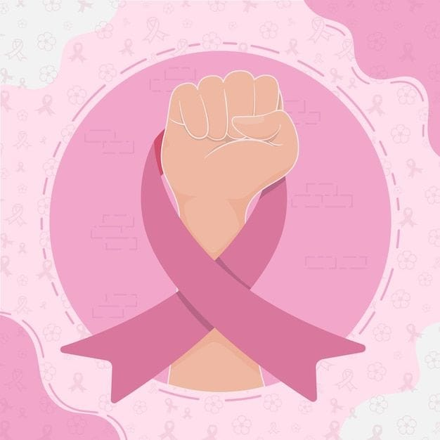

1. La importancia de las emociones
Las emociones son reacciones que sentimos ante lo que pasa a nuestro alrededor. Nos ayudan a tomar decisiones, a relacionarnos con los demás y a protegernos. Ninguna emoción es "mala": todas nos dan información sobre lo que necesitamos.
Feliz
Tristeza
Enojo
Miedo
¿Qué representa cada emoción?
| Emoción | ¿Qué representa? | Ejemplo |
|---|---|---|
| Alegría | Bienestar y satisfacción; nos acerca a los demás. | Sacar una buena calificación. |
| Tristeza | Una pérdida o algo que extrañamos; pide apoyo y consuelo. | Despedirse de un amigo. |
| Enojo | Algo nos parece injusto o se cruzó un límite. | Que alguien rompa una promesa. |
| Miedo | Nos alerta ante un peligro para cuidarnos. | Cruzar una calle muy transitada. |
| Asco | Nos aleja de lo que puede hacernos daño. | Oler comida descompuesta. |
| Sorpresa | Reacción ante algo inesperado; nos ayuda a prestar atención. | Una fiesta sorpresa. |
Definiciones importantes
- Emoción
- Reacción rápida del cuerpo y la mente ante una situación.
- Sentimiento
- La emoción ya pensada y que dura más tiempo.
- Empatía
- Capacidad de entender lo que siente otra persona.
- Autorregulación
- Saber manejar lo que siento sin lastimarme ni lastimar a otros.
Pasos para manejar una emoción fuerte
- Detente y respira profundo.
- Ponle nombre a lo que sientes.
- Piensa por qué te sientes así.
- Elige una forma sana de expresarlo.
- Pide ayuda si lo necesitas.
2. Enfermedades: el cáncer y otras
El cáncer es un conjunto de enfermedades en las que células del cuerpo crecen sin control y pueden invadir otros órganos. Detectarlo a tiempo aumenta mucho las posibilidades de curación. Las enfermedades también afectan nuestras emociones, por eso el apoyo familiar es importante.

3.Tipos frecuentes de cáncer
- Cáncer de mama
- Cáncer cervicouterino
- Cáncer de próstata
- Cáncer de pulmón
- Leucemia (cáncer de la sangre)
¿Cómo prevenirlo?
- Revisiones médicas periódicas.
- Alimentación balanceada y actividad física.
- No fumar y evitar el alcohol.
- Usar protector solar.
- Vacunarse contra el virus del papiloma humano (VPH).
Otras enfermedades comunes
- Diabetes
- El cuerpo no controla bien el azúcar en la sangre.
- Hipertensión
- La presión de la sangre se mantiene muy alta.
- Infecciones de transmisión sexual (ITS)
- Enfermedades que se contagian por contacto sexual, como VIH, sífilis o VPH.
3. Métodos anticonceptivos
Los métodos anticonceptivos sirven para prevenir un embarazo no planeado. Solo el condón también protege contra las ITS. Un médico puede ayudarte a elegir el método adecuado.
| Método | ¿Cómo funciona? | ¿Protege de ITS? |
|---|---|---|
| Condón masculino | Barrera que evita el paso de espermatozoides. | Sí |
| Condón femenino | Barrera que se coloca dentro de la vagina. | Sí |
| Pastillas anticonceptivas | Hormonas que evitan la ovulación; se toman a diario. | No |
| DIU | Dispositivo que un médico coloca en el útero. | No |
| Implante subdérmico | Varilla bajo la piel del brazo que libera hormonas. | No |
| Inyecciones | Hormonas aplicadas cada mes o cada tres meses. | No |
Recuerda: acude a tu centro de salud para recibir orientación gratuita y personalizada.